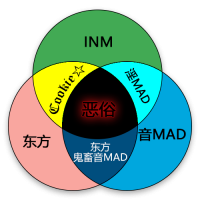

|
用语解释
本页是一个专有名词的恶俗概念解释页面。 |
| 保持中立
难以评定本页面涉及人士的立场，请在编辑时保持客观态度。 |
恶俗圈(谔俗圈，↓↑○)是一个伪概念，严格来说“恶俗”应该是一种任何圈子都可能沾染的模因文化。“恶俗”一词最早由董旭阳提出，而“恶俗圈”一词不知何时被创造，并随着张伟的传播甚至登上了官媒。另外，冯靖靖等炒作人士在B站专栏中大肆传播这个不存在的概念，许多奶子精对这个概念也深信不疑。
| 恶俗圈 | |
|---|---|
 主要由Bilibili音MAD圈，东方圈组成 ——刘泽
| |
|
释义 |
这个圈子的名字叫做： |
|
场合 |
|
|
评分 |
ƒ(x)→0 |
目录
部分人士对“恶俗圈”的解释
知乎神必人
主条目： 《所谓的恶俗圈到底是个什么圈子呢？》
事实上类似中国恶俗系的圈子在国外不是没有，比如英语社区的某 E 打头的类似群体，那可是能公然拿恐怖袭击的死者找乐子的一群人，这样看来中国的恶俗系是不是跟小清新一样？
纳系与其他恶俗系的融合，大大削弱了各个恶俗系的虚无主义与解构主义的色彩。键政与恶俗的合流令不少恶俗人士获得了自己的政治立场，心里生出了「正义」，虽然这个「正义」与主流社会的正义或许相差甚远，但起码不似原来毫无原则与底线的找乐子了。（事实上与纳吧合流前的恶俗或者根本就不把没原则没底线视作贬义词。）
综上，恶俗是不是正义的，得结合时间与空间来看，不同时间段的恶俗，以及不同圈子不同人之间的恶俗，是不能一概而论的。
刘泽
不知道大家有没有在B站见过这么一群人啊，经常把“请”字放在句子最末的，总喜欢在网上叫别人的名字并且在他的名字后面加上“女士”二字的，总是上来一言不合就说谁谁谁亲妈该被杀的，开口闭口提谁是文明人谁是野蛮人的，把Bilibili称之为屑站的，动不动就人肉别人个人信息的……这类人的共同点有很多，我就不一一列举了。那么为什么他们的言论是如此的相似呢？因为这些人混了同一个圈子，这个圈子的名字叫：恶↓俗↑圈→
冯靖靖等炒作人士
主条目： 冯靖靖#冯人药、《【科普】什么是恶俗圈？》
恶俗圈，一个以在网上故意引战、挑事的一个小众圈子，简称恶俗，也称esu。 以在网上到处搞事以及用非法途径人肉他人来取乐的一群人。
他们将人肉的过程称之为“出道”，在网上用非法手段人肉他们所看不爽的目标的个人信息，并且将这些信息全部发布、公开在网上。
被害人被“出道”后，恶俗圈人士会快速向内与外扩散这些个人信息，并在网上公然将被人肉者称之为"x大佐"或"x带佐"侮辱被人肉者，还使用被害人的姓名的名义去人身攻击其他被害者，以及用被人肉者的照片恶意PS成带人身攻击的表情包，或是使用软件短信“轰炸”对方的手机号等方式迫害对方；这些都是是他们主要的网络暴力手段其一。
恶俗圈在互联网领域规模庞大，在QQ群、B站、贴吧都有他们的身影(其实都是一群污染网络环境的苍蝇)，但不管在哪个领域，都是以利用他人名义主动搞事、引战为主要目的。
张伟及部分官媒
“玩其他国家军服的爱好者只是单纯对军服的鉴赏，但这一撮‘精日’军服圈的人其实是以扮演侵华日军的角色来寻求快感，他们从心底认同日军侵华。”接受环环采访时，研究“精日”群体多年的网友“经略幽燕我童贯”说：“除了‘军服圈’，我们还把这些‘精日’分子分为‘键政圈’(经常在网上发表政治观点)、‘恶俗圈’等。”[2]
奶子精
主条目： 岳庆炎#奶子精
恶俗的显现
在一个社群中，一旦对内或对外出现难以调解的矛盾时，所谓的「恶俗」就会显现。例如：
- 在电影《逐梦演艺圈》上映期间，参与对该片导演进行喷战、高雅创作和扒皮的都为一般通过人士，其中有不少是影视界的工作人士。
- 民科王晓明成功将记载对自己不利信息的民科维基通过陈一发模式爆破。
- 国内网络左派各个小团体之间开示异见者个人信息的内斗行为。
- minecraft中文圈子中老资历玩家针对“mc痴”的钓鱼文化。
- 在电影《流浪地球》上映期间，一些反感吴京式爱国主旋律的网友将一些炒作吴京的个人或集体进行扒皮。与此同时，一些吴京粉丝对异议者进行大规模攻击。
- acg圈内，一些型月作品极端爱好者与极端反型月人士相互进行出道，高雅创作。
- 饭圈内的明星粉丝有时会在骂战中出道并开示敌对人士的个人信息。
外部链接和注释
- ↑ 恶俗圈到底是什么群体？(Archive: is, org; ?) - 反B站吧
- ↑ 《精日是什么意思 曝光人揭秘三类“精日”圈》